تحقیق کنید چرا استفاده از توابع prompt() و confirm() برای عملیات ورودی میتواند باعث مختل شدن تجربه کاربری شود؟
کلاسها و اشیا در زبانهای برنامهنویسی، کلاس به معنای الگویی برای ایجاد اشیا است. یک کلاس حاوی مجموعهای از ویژگیها و متدهاست. شیئی که از روی یک کلاس تعریف میشود، دارای ویژگیها و متدهای تعریف شده در آن کلاس خواهد بود.
بیشتر بدانید
در مثال زیر یک کلاس با عنوان Person ایجاد شده است که حاوی ویژگیهای name و age است:
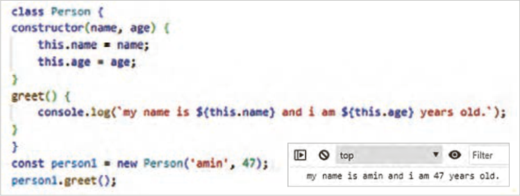
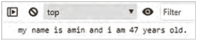
متد constructor برای تعریف و مقداردهی ویژگیهای یک شیء استفاده میشود. زمانی که یک شیء جدید از یک کلاس ایجاد میشود، متدconstructor به طور خودکار فراخوانی شده و مقادیر اولیه را به ویژگیهای آن شیء اختصاص میدهد. در مثال فوق متد constructor دو پارامتر name و age را میپذیرد و آنها را به ویژگیهای متناظر در شیء نسبت میدهد.
کلاس person دارای یک متد بنام greet است که یک پیغام را در کنسول مرورگر نمایش میدهد.
متغیر person1 یک شیء از نوع کلاس person است که مقدار ویژگیهای آن برابر amin و 47 است. این مثال نشان میدهد که برای ایجاد یک شیء از روی یک کلاس باید از کلمه کلیدی new استفاده شود. با توجه به اینکه کلاس person دارای متدی بنام greet است، شیء person1 نیز امکان استفاده از این متد را دارد. متد greet باعث نمایش عبارت "MynameisaminandIam 47 yearsold" در کنسول خواهد شد.
ایجاد کلاس و شیء فایل جدیدی با نام object.html ایجاد کنید و درون آن کلاس جدیدی با نام Car با ویژگیهای
auto_maker، model وyear ایجاد کنید.
یک متد با نام print_Details برای چاپ ویژگیهای خودرو بنویسید. نحوه چاپ بهصورت زیر باشد:
Auto maker: Toyota , Model: Camry , Year: 2020
صفحه ۲۲۶
یک شیء با مقادیر Toyota، Camry، 2020 ایجاد کنید و متد print_details را برای شیء جدید مورد استفاده قرار دهید.
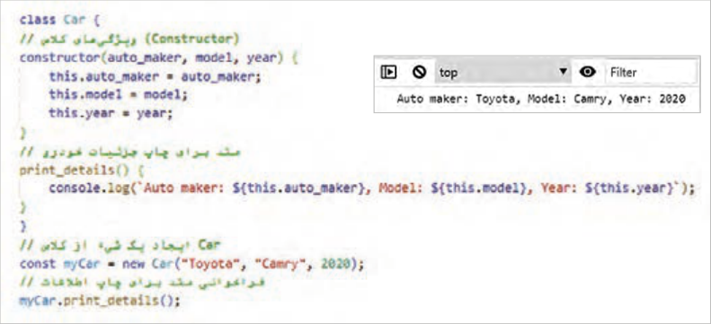
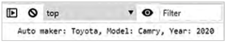
دسترسی به عناصر DOM جاوااسکریپت برای انجام عملیات مختلف بر روی عناصر صفحه، به دسترسی به آن عناصر نیاز دارد. به همین دلیل جاوااسکریپت دارای متدهایی برای دسترسی به عناصر است. بهعنوان مثال برای دسترسی به عنصری با شناسه demo از متد getElementById بهشکل زیر استفاده میشود:
در این اسکریپت مقدار جدید عنصر para توسط ویژگی textContent مشخص شده است.
برای انتخاب و دسترسی به هر یک از عناصر صفحه روشهای مختلفی وجود دارد که در این بخش به آنها اشاره میشود.
انتخاب براساس ID: عناصر صفحه براساس شناسه (id) آنها انتخاب میشوند.
انتخاب براساس کلاس: مجموعهای از عناصر با نام کلاس مشخص انتخاب میشوند.
انتخاب براساس نام تگ: مجموعهای از عناصر با نام تگ یکسان انتخاب میشوند.
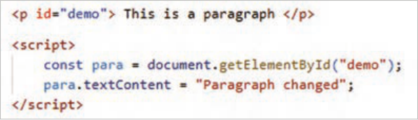
شکل 12
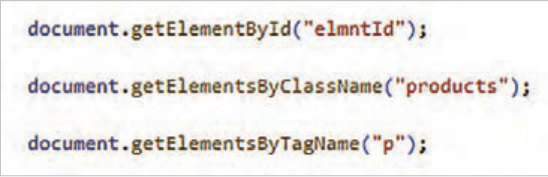
شکل 13
صفحه ۲۲۷
کنجکاوی
برای مطالعه درباره سایر متدهای دسترسی به عناصر، عبارت «howtogetelementsbyJavaScript» را در گوگل جستوجو کنید و از لیست نتایج سایت w3schools.com را باز کنید.
در ادامه تمرینهایی برای کار روی عناصر مختلف صفحه توسط جاوااسکریپت ارائه میگردد.
مدیریت عناصر صفحه توسط جاوااسکریپت
کار کارگاهی
دسترسی به محتوای عناصر، تغییر محتوا و سبک عناصر: اسکریپتی بنویسید که محتوا و سبک یک دکمه و عنصر متنی را توسط جاوااسکریپت تغییر دهد. این تغییرات باید در هنگام کلیک روی دکمه رخ دهد.
یک فایل به نام product.html ایجاد کنید و کد زیر را در بخش <body> وارد کنید:
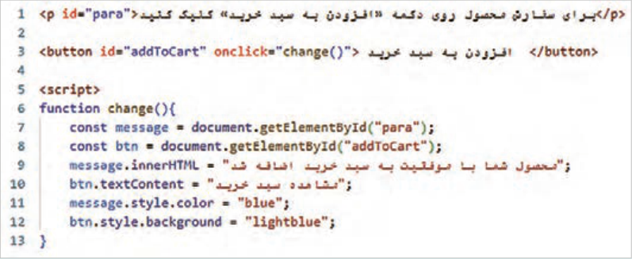
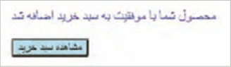
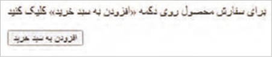
در خطوط 6 تا 13 اسکریپت فوق یک تابع با نام change() تعریف شده است که دسترسی به عناصر addToCart و para و سپس تغییر محتوا و سبک آنها را انجام میدهد. تابع change() هنگام کلیک روی دکمه فراخوانی میشود.
در خطوط 7 و 8 دسترسی به عناصر پاراگراف و دکمه انجام شده است. در خطوط 9 و 10 تغییر محتوای عناصر پاراگراف و دکمه، توسط ویژگیهای innerHTML و textContent صورت گرفته است. در خطوط 11 و 12 تغییر سبک عناصر توسط ویژگی style انجام شده است. فایل را ذخیره کنید و نتیجه را در مرورگر بررسی کنید.
بیشتر بدانید
دسترسی به عناصر و تغییر ویژگی آنها: اسکریپتی بنویسید که ویژگی src یک تصویر را هنگام قرار گرفتن ماوس روی آن تغییر دهد.
صفحه ۲۲۸
در فایل products.html تصویر یک محصول را به قسمت <body> اضافه کنید. سپس اسکریپت زیر را برای تغییر مقدار ویژگی src تصویر استفاده کنید.
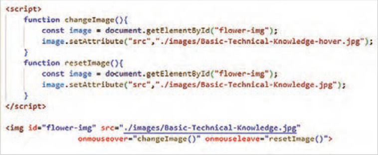
فایل را ذخیره کنید و نتیجه را در مرورگر بررسی کنید.
با انتقال اشارهگر ماوس روی تصویر، رویداد onmouseover فعال شده و در نتیجه تابع changeImage() برای تغییر تصویر فراخوانی میشود. با کنار رفتن ماوس از روی تصویر، رویداد onmouseleave فعال شده و بنابراین تابع resetImage() فراخوانی میشود. این تابع تصویر اولیه را برمیگرداند.
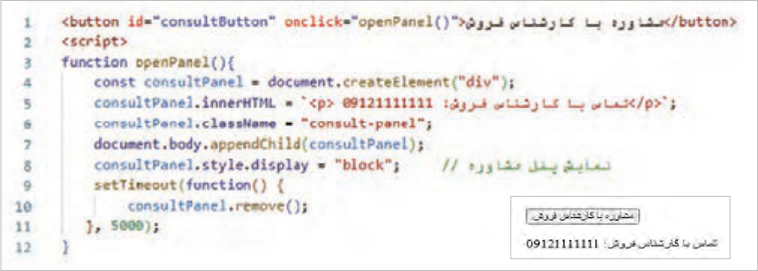
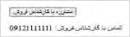
در هر دو تابع فوق از متد setAttribute() برای تغییر تصویر استفاده شده است.
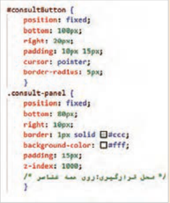
اضافه و حذف کردن عناصر توسط جاوااسکریپت:
اسکریپتی بنویسید که با کلیک روی یک دکمه با عنوان مشاوره، پانلی را برای راهنمایی کاربر به صفحه اضافه کند و بعد از چند ثانیه آن را ببندید.
یک فایل جدید با نام open-panel.html ایجاد کنید و اسکریپت را طبق شکل روبهرو درون آن بنویسید.
صفحه ۲۲۹
استایل عناصر را به بخش <head> اضافه کنید. سپس فایل را ذخیره کنید و نتیجه را در مرورگر مشاهده کنید.
با کلیک روی دکمه «مشاوره با کارشناس فروش» تابع openPanel() فراخوانی میشود. این تابع در خط 3 تا 12 نوشته شده است.
در خط 4 یک عنصر div جدید توسط متد createElement ایجاد میشود.
در خط 5 محتوای عنصر توسط ویژگی InnerHTML تعیین میگردد.
عنصر جدید نیازمند تعیین استایل است. این استایل توسط کلاس consultpanel مشخص میشود.
در خط 6 نام کلاس عنصر جدید تعیین میشود.
در خط 7 عنصر جدید توسط متد appendChild به صفحه اضافه میگردد.
پانل مشاوره (عنصر div) بهصورت پیشفرض مخفی است. در خط 8 وضعیت نمایش پانل به block تغییر میکند.
در خط 9 متد setTimeout برای تعیین زمان حذف پانل مشاوره استفاده میشود.
در خط 9 پانل مشاوره بعد از 5 ثانیه توسط متد remove حذف میشود.
دسترسی به اطلاعات فرم و اعتبارسنجی دادههای کاربر: یک اسکریپت ساده برای اعتبارسنجی دادههای ورودی کاربر بنویسید. در این اعتبارسنجی پر بودن فیلدهای متنی را بررسی کنید، بهطوریکه اگر یک فیلد متنی خالی باشد، پیغام هشداری را نمایش میدهد.
یک فایل بهنام sign-in.html ایجاد کنید و کد شکل زیر را درون آن وارد کنید:
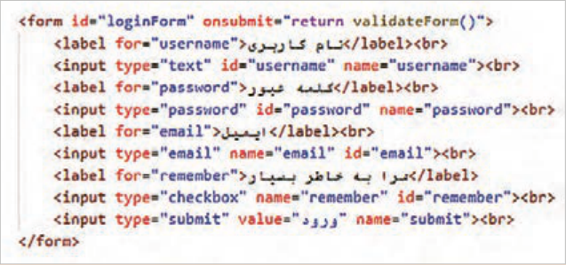
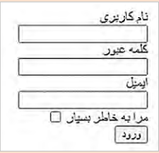
این فرم حاوی سه فیلد برای دریافت نام کاربری، کلمه عبور و ایمیل است.
صفحه ۲۳۰
برای اعتبارسنجی فرم از اسکریپت شکل زیر استفاده کنید. این اسکریپت حاوی تابع validateForm() است که مقدار ورودی فیلدهای متنی را بررسی میکند. این تابع در رویداد onsubmit فرم صفحه قبل فراخوانی میشود.
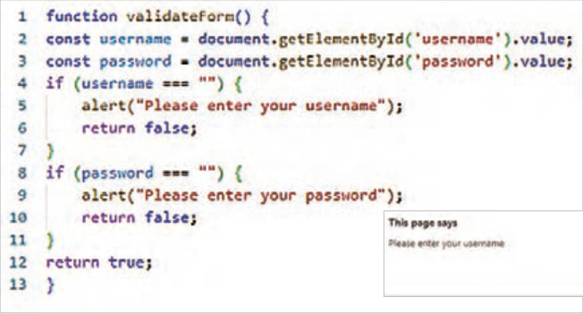
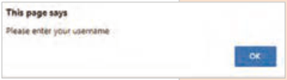
تابع validateForm() نام کاربری و کلمه عبور را در خط 2 و 3 دریافت میکند و مقدار آنها را درون دو متغیر username و password قرار میدهد. در خط 4 تا 7 خالی بودن username بررسی میشود، در صورت خالی بودن این متغیر، پیغام هشدار ظاهر میشود و دستور returnfalse از ارسال محتوای فرم به سرور جلوگیری میکند. بهطور مشابه در خط 8 تا 11 خالی بودن متغیر password بررسی میگردد. در صورتیکه شرط ifهای خط 4 و 8 برقرار نباشد، دستور خط 12 اجرا میشود و اطلاعات فرم به سرور ارسال میشود.
در ادامه طول نام کاربری و کلمه عبور را بررسی کرده؛ بهطوریکه اگر طول هر یک از این دو فیلد کمتر از 6 کاراکتر باشد، پیغام هشدار نمایش داده شود. برای اینکار شرط زیر را بعد از خط 11 بنویسید.
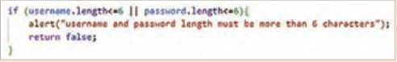
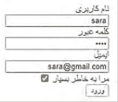
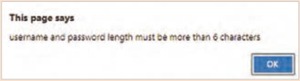
نکته
DOM پایه تمام وبسایتهای تعاملی است؛ تسلط بر آن یعنی قدم گذاشتن به دنیای حرفهای طراحی وب.
Page 225
Try this
Research why using the prompt() and confirm() functions for input operations can disrupt the user experience.
Classes and objects: In programming languages, a class means a pattern for creating objects. A class contains a set of properties and methods. An object that is defined from a class will have the properties and methods defined in that class.
Learn more
In the example below, a class titled Person has been created that contains the properties name and age:
The constructor method is used to define and initialize the properties of an object. When a new object is created from a class, the constructor method is called automatically and assigns the initial values to that object’s properties. In the example above, the constructor method accepts two parameters name and age and assigns them to the corresponding properties in the object.
The person class has a method named greet that displays a message in the browser console.
The variable person1 is an object of the person class type whose property values are amin and 47. This example shows that to create an object from a class you must use the keyword new. Given that the person class has a method named greet, the object person1 can also use this method. The greet method will display the phrase "MynameisaminandIam 47 yearsold" in the console.
Creating a class and an object: Create a new file named object.html and inside it create a new class named Car with the properties
auto_maker، model وyear ایجاد کنید.
Write a method named print_Details to print the car’s properties. The print format should be as follows:
Auto maker: Toyota , Model: Camry , Year: 2020
Page 226
Create an object with the values Toyota, Camry, 2020 and use the print_details method for the new object.
Accessing DOM elements: To perform various operations on page elements, JavaScript needs access to those elements. For this reason, JavaScript has methods for accessing elements. For example, to access an element with the identifier demo, the getElementById method is used as follows:
In this script, the new value of the para element is specified by the textContent property.
There are various methods for selecting and accessing each of the page elements, which are referred to in this section.
Selection based on ID: Page elements are selected based on their identifier (id).
Selection based on class: A set of elements with a specified class name is selected.
Selection based on tag name: A set of elements with the same tag name is selected.
Figure 12Figure 13
Page 227
Try this
To study other methods for accessing elements, search for the phrase «howtogetelementsbyJavaScript» in Google and from the results list open the site w3schools.com.
In the following, exercises are presented for working on various page elements with JavaScript.
Managing page elements with JavaScript
Workshop
Accessing element content, changing content and element style: Write a script that changes the content and style of a button and a text element with JavaScript. These changes should occur when the button is clicked.
Create a file named product.html and enter the code below in the <body> section:
In lines 6 through 13 of the script above, a function named change() is defined that accesses the elements addToCart and para and then changes their content and style. The function change() is called when the button is clicked.
In lines 7 and 8, access to the paragraph and button elements is performed. In lines 9 and 10, the content of the paragraph and button elements is changed using the innerHTML and textContent properties. In lines 11 and 12, the style of the elements is changed using the style property. Save the file and check the result in the browser.
Learn more
Accessing elements and changing their attributes: Write a script that changes the src attribute of an image when the mouse is placed over it.
Page 228
In the file products.html, add a product image to the <body> section. Then use the script below to change the value of the image’s src attribute.
Save the file and check the result in the browser.
When the mouse pointer is moved onto the image, the onmouseover event is activated and as a result the function changeImage() is called to change the image. When the mouse moves away from the image, the onmouseleave event is activated and therefore the function resetImage() is called. This function restores the original image.
In both functions above, the setAttribute() method is used to change the image.
Adding and removing elements with JavaScript:
Write a script that, when a button titled Consultation is clicked, adds a panel to the page to guide the user and closes it after a few seconds.
Create a new file named open-panel.html and write the script inside it according to the figure opposite.
Page 229
Add the element styles to the <head> section. Then save the file and observe the result in the browser.
When the button “Consultation with a sales expert” is clicked, the function openPanel() is called. This function is written in lines 3 through 12.
In line 4, a new div element is created by the createElement method.
In line 5, the element’s content is set by the InnerHTML property.
The new element needs a style to be set. This style is specified by the class consultpanel.
In line 6, the class name of the new element is set.
In line 7, the new element is added to the page by the appendChild method.
The consultation panel (the div element) is hidden by default. In line 8, the panel’s display status is changed to block.
In line 9, the setTimeout method is used to set the time for removing the consultation panel.
In line 9, the consultation panel is removed after 5 seconds by the remove method.
Accessing form information and validating user data: Write a simple script to validate user input data. In this validation, check that the text fields are filled so that if a text field is empty, a warning message is displayed.
Create a file named sign-in.html and enter the code from the figure below into it:
This form contains three fields for receiving a username, a password, and an email.
Page 230
To validate the form, use the script from the figure below. This script contains the function validateForm(), which checks the input values of the text fields. This function is called in the onsubmit event of the form on the previous page.
The function validateForm() receives the username and password in lines 2 and 3 and places their values in the two variables username and password. In lines 4 through 7, whether username is empty is checked; if this variable is empty, a warning message appears and the statement returnfalse prevents the form content from being sent to the server. Similarly, in lines 8 through 11, whether the variable password is empty is checked. If the conditions of the if statements in lines 4 and 8 are not true, the statement in line 12 is executed and the form information is sent to the server.
Next, check the length of the username and password so that if the length of either of these two fields is less than 6 characters, a warning message is displayed. To do this, write the condition below after line 11.
Note
DOM is the foundation of all interactive websites; mastering it means taking a step into the professional world of web design.